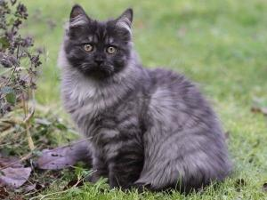
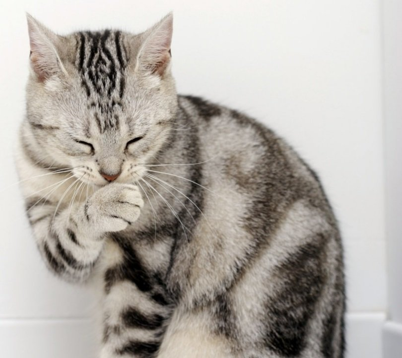
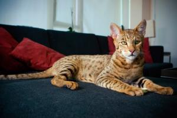
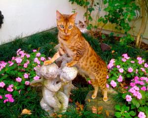
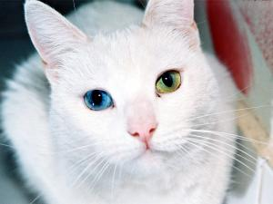

alemán de pelo largo

Se trata de una de las razas de gatos que más ha esperado para su reconocimiento. Estuvo a punto de desaparecer durante la segunda guerra mundial y no fue sino hasta hace pocos años que se estableció oficialmente en las más importantes organizaciones felinas internacionales.
american wirehair

La raza de gatos american wirehair (comúnmente conocida como gato de pelo duro americano) surgió de manera fortuita gracias a una mutación espontánea en una granja neoyorkina alrededor de 1966. De la unión de dos gatos de granja surgieron 6 gatitos, pero uno rojiblanco con el pelo diferente al resto. Este gatico fue vendido a una criadora local la cual lo llamó Adam y lo cruzó con una gata de pelaje normal de su misma camada.
Gato Ashera

Prendas textiles en boga, joyas bellas y costosas, autos nuevos de lujo. A lo largo de la historia el ser humano ha gastado millones para complacer estos placeres y caprichos. Pero, ¿qué pasa cuando este deseo millonario es una mascota? ¿Conoces al gato más caro del mundo? Pues MundoGatos.com te invita a conocer el mundo glamuroso del gato Ashera.
Gato Asiático

Entre quienes sienten predilección por los felinos como mascotas existe cierta simpatía hacia una raza en especial: el gato Asiático Humo Atigrado. Una de las razones que más atractivo le concede a esta especie es su notable parecido con el tigre, pues luce como uno a escala más pequeña.
Khao Manee

El gato Khao Manee también es conocido como Ojos de Diamante, aunque “Khao Manee” significa “gema blanca”. Éste es uno de los gatos más exóticos y valiosos del mundo. También se les llama “joya blanca” y “gatos reales de Siam”.
braco de weimar

El gato oriental de pelo largo combina la belleza del gato oriental con la elegancia del siamés. Tiene un manto de pelo semilargo con colores variados y distribución que se encuentra dentro de los patrones del gato balinés.